Mumbai
Gateway of India
Iconic monument overlooking the Arabian Sea.An arch monument built in the early 20th century in Mumbai to commemorate the December 2, 1911, landing of King George V and Queen Mary at Apollo Bunder (now Wellington Pier) on the Arabian Sea, on their way to the Delhi Durbar.
 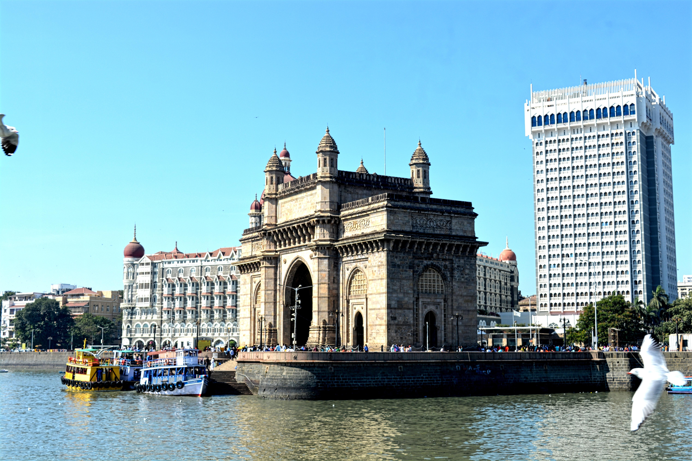
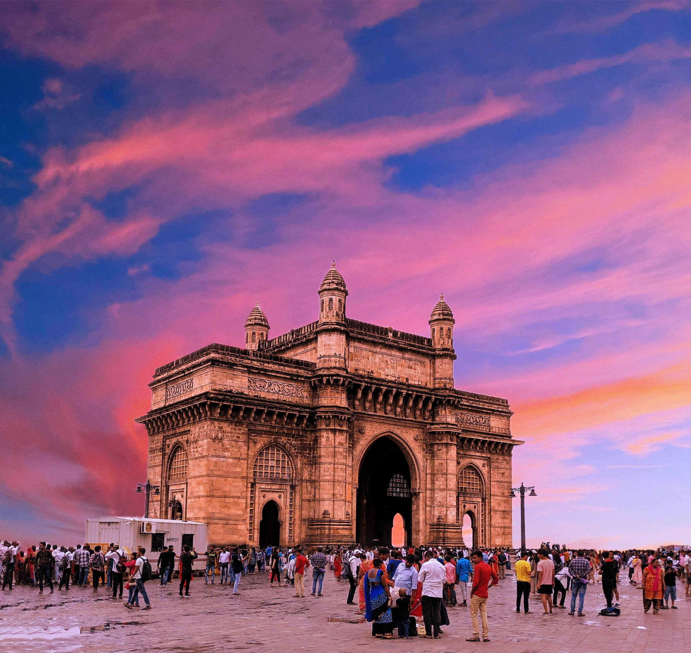
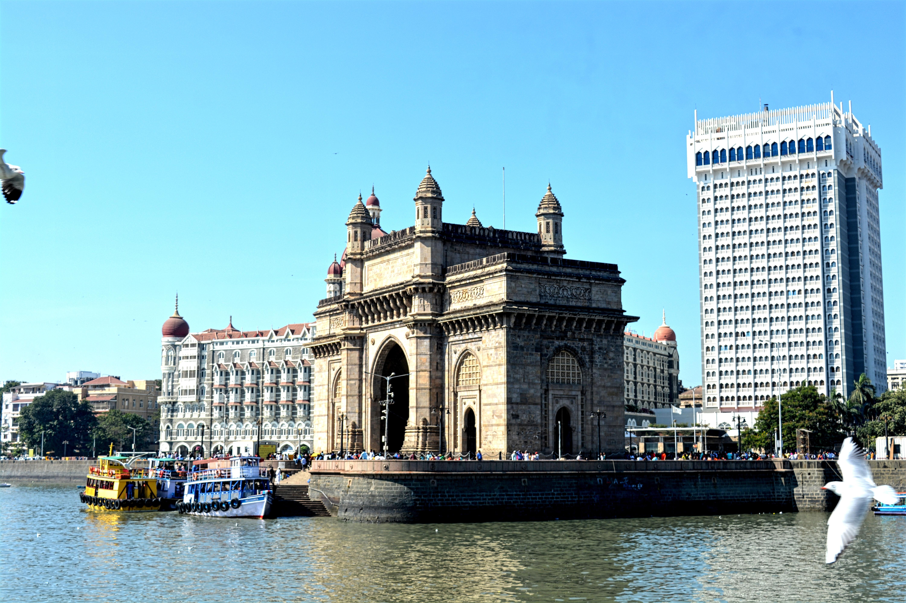
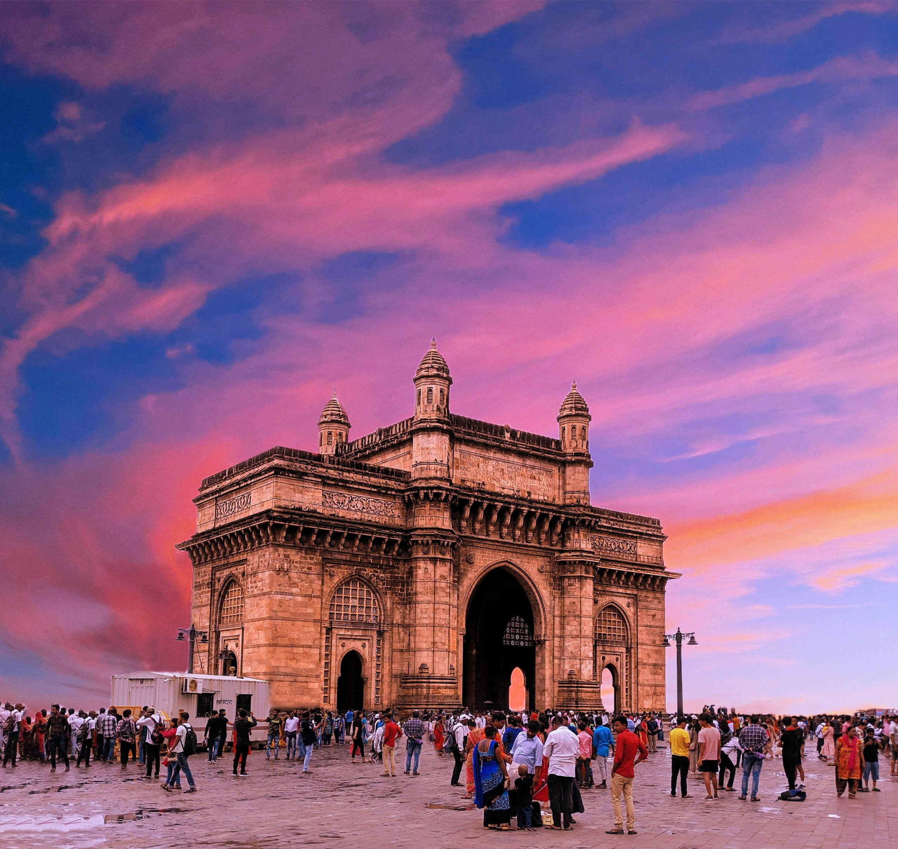
Marine Drive
A scenic promenade best visited at sunset. A 3-kilometre-long promenade along the Netaji Subhash Chandra Bose Road on the western coast of Mumbai, Marine Drive has the vast and beautiful Arabian Sea on one side and the sparkling row of iconic landmarks and luxurious residences on the other.
Elephanta Caves
UNESCO-listed rock-cut caves dedicated to Lord Shiva. The Elephanta Caves are among the most beautiful, historically significant attractions in Mumbai. Situated on an island off the coast, this UNESCO World Heritage Site features multiple rock-hewn cave temples and statues dating back to around the 7th century AD, including a celebrated statue of Shiva in his three-faced form.
 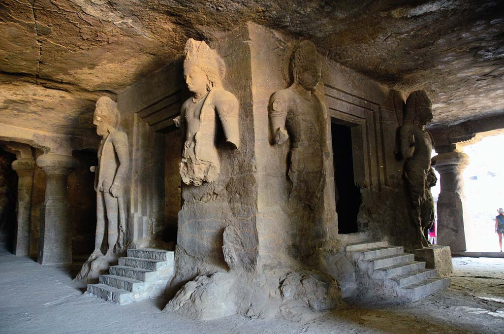
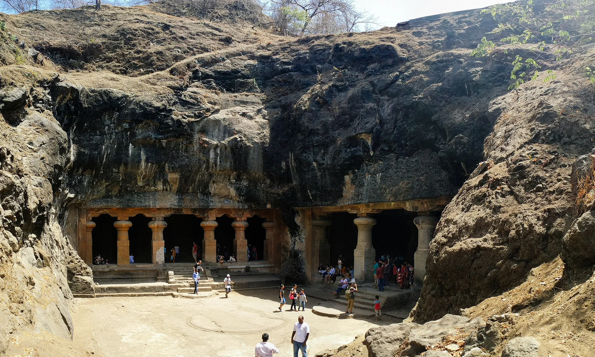
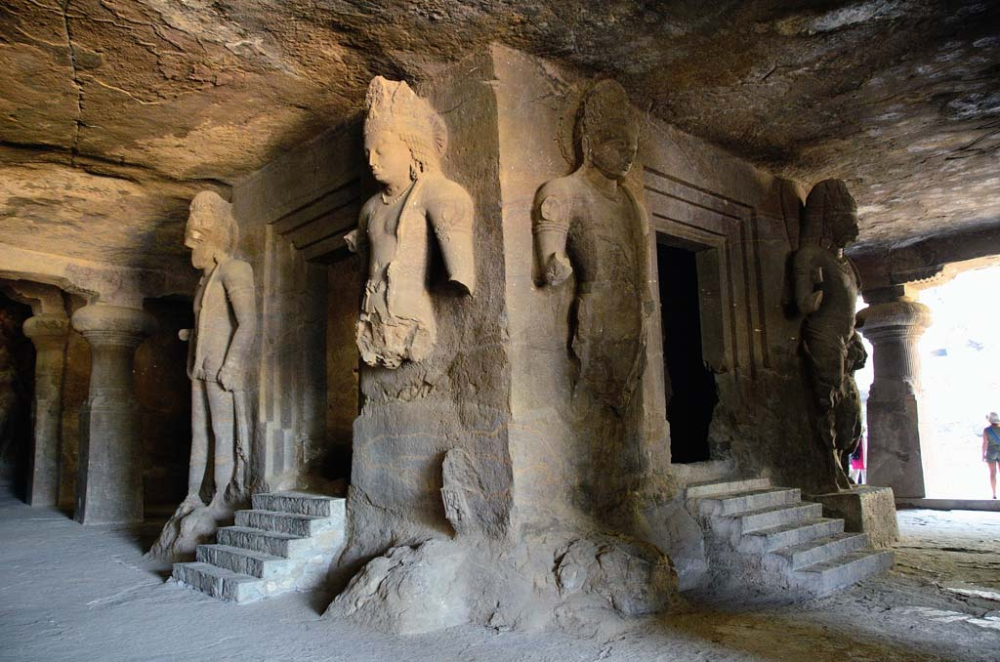
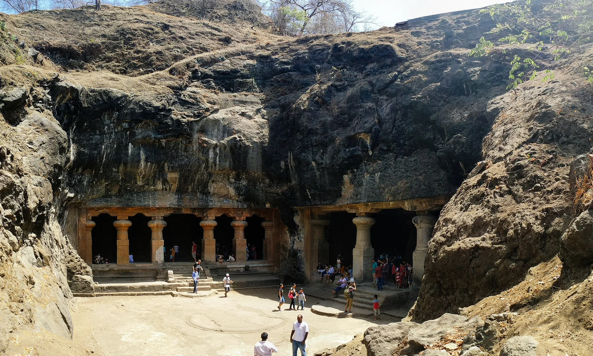
Pune
Shaniwar Wada
The historic fort of the Peshwas. It is a historical fortification in the city of Pune, India. Built in 1732, it was the seat of the Peshwas of the Maratha Confederacy until 1818. The fort itself was largely destroyed in 1828 by an unexplained fire, but the surviving structures are now maintained as a tourist site.
 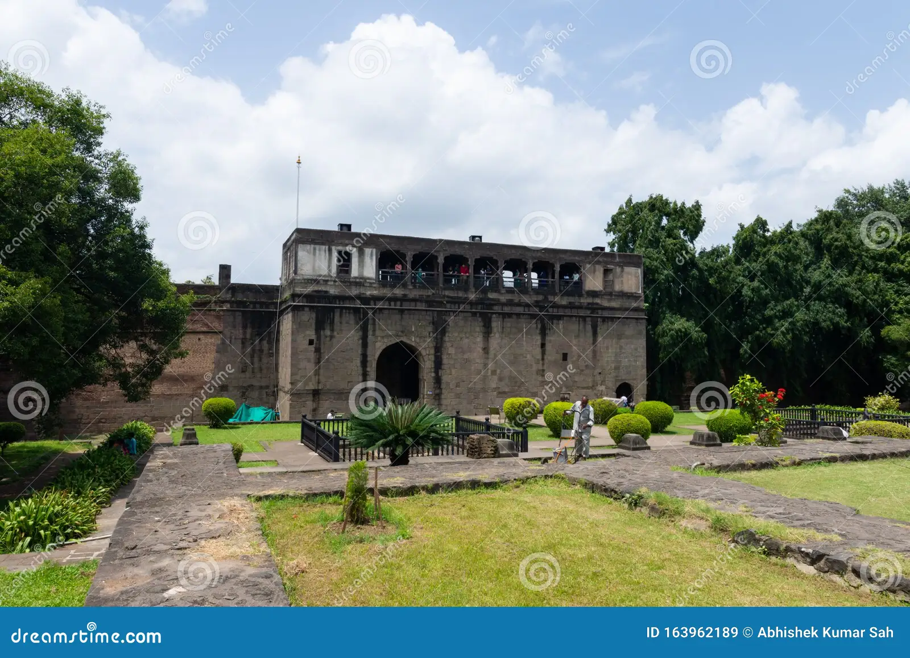
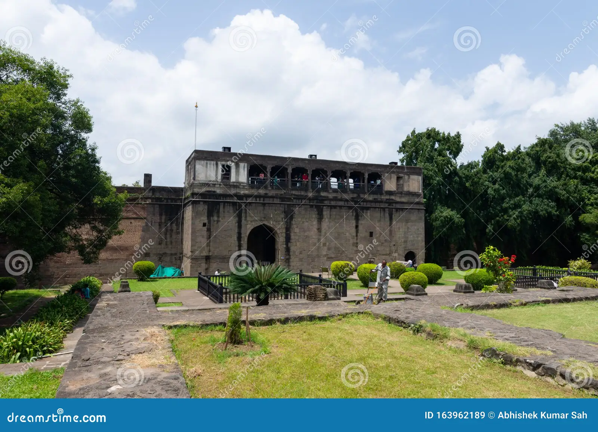
Aga Khan Palace
A landmark of India’s freedom struggle. AgaKhanPalace is the place where Mohandas Gandhi was imprisoned in 1940, thus becoming one of the important landmarks in India. Also nearby are monuments to his wife and secretary, who tragically passed away in captivity.
Aurangabad
Ajanta Caves
UNESCO-listed ancient Buddhist caves. The Ajanta Caves are 30 rock-cut Buddhist cave monuments dating from the second century BCE to about 480 CE in Aurangabad district of Maharashtra state in India.
 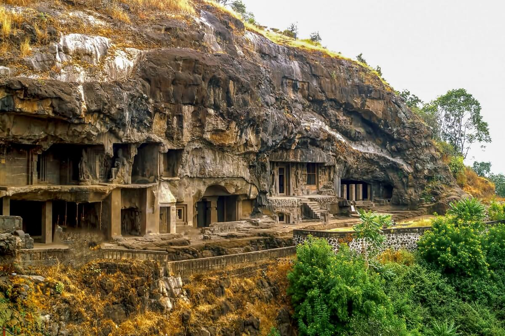
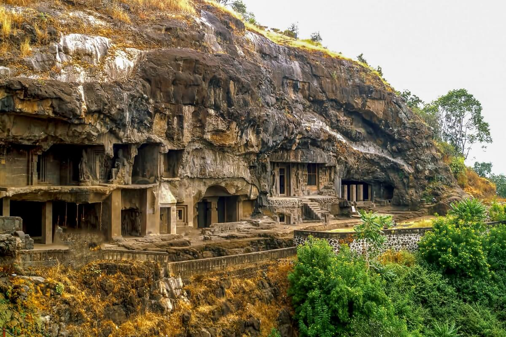
Ellora Caves
Featuring Hindu, Buddhist, and Jain rock-cut caves. The Ellora Caves are a UNESCO World Heritage Site in Aurangabad, India. It is one of the largest rock-cut cave complexes in the world, with artwork dating from the period 600–1000 AD, including Hindu, Buddhist, and Jain caves.
Nashik
Sula Vineyards
India’s most famous vineyard. Sula Vineyards (or "Sula") is a winery and vineyard located in the Nashik region of western India, 180 km northeast of Mumbai. It was founded by Rajeev Samant in 1999.
Trimbakeshwar Temple
One of the 12 Jyotirlingas of Lord Shiva. Nestled in the spiritual town of Trimbak, around 28 kilometers from Nashik, the Trimbakeshwar Shiva Temple is a revered pilgrimage site in Maharashtra. This ancient temple, known as one of the twelve Jyotirlingas, holds immense religious and mythological significance.
Kolhapur
Mahalaxmi Temple
A revered Hindu temple dedicated to Goddess Lakshmi. Mahalaxmi Temple is a Hindu temple, dedicated to Mahalakshmi the central deity of Devi Mahatmyam, located in Mumbai, India. It is one of the most famous temples of the city of Mumbai. The temple was built in 1831 by Dhakji Dadaji (1760–1846), a Hindu merchant.
Rankala Lake
A scenic spot for relaxation. Before the eighth century, Rankala was a stone quarry. In the 9th century, an earthquake caused immense structural damage to the quarry, causing water to accumulate from an underground source forming the Rankala Lake.